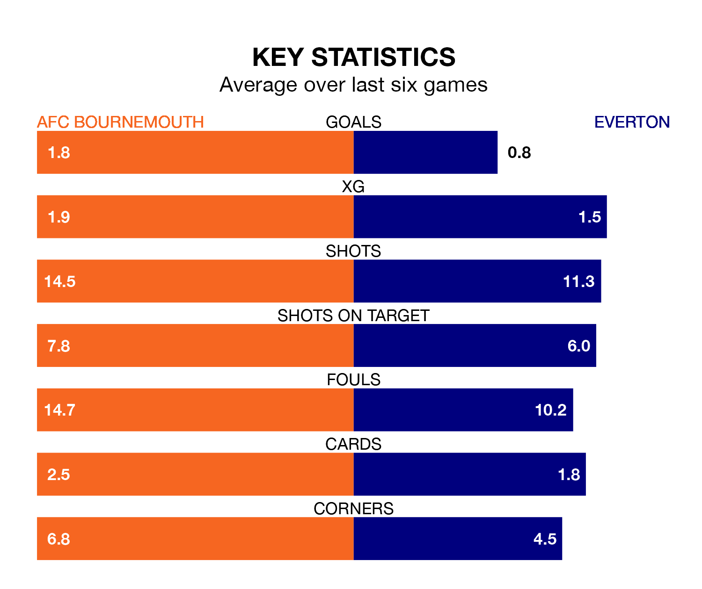

Everton travel to the Vitality Stadium looking to secure a first win in 12 Premier League games against AFC Bournemouth on Saturday.
The Toffees have lost six and drawn five matches since they last earned three points – against Burnley on December 16.
They face a Bournemouth side who have won three and drawn four over that time.
In Jordan Pickford, Everton can rely on one of the league's safest pair of hands. He has kept eight clean sheets in his 28 appearances this season, and only one other 'keeper – Arsenal's David Raya – has been able to prevent the opposition scoring on more occasions in the Premier League.
In Bournemouth's net, Norberto Neto has six clean sheets in 26 games. He has conceded a goal every 60 minutes, 20% more often than the 72 minutes between goals for Pickford.
In the last 10 years, Bournemouth and Everton have played each other on 15 occasions. Bournemouth won six of them, Everton seven, and they drew twice.
On average, the Cherries scored 1.7 goals and the Toffees 1.8 in those matches.
Their last meeting was on October 7, when Everton won 3-0 at home.
With 29 goals in 28 games so far this season, the Toffees are the league's joint-third-lowest scorers with 1.0 goals per game. But they are conceding fewer than average too, letting in 39 goals at a rate of 1.4 per game.
The Cherries are also below average scorers, with 1.5 goals per game, compared to a league average of 1.6. They have conceded 1.9 goals per game.
The away side are 14th in the table after 28 games, of which they have won eight and drawn seven, earning 31 points.
The hosts are one place ahead of Everton in 13th, with nine wins and eight draws putting them on 35 points.
Bournemouth's last match was on March 13, a 4-3 win against Luton Town, with Antoine Semenyo (two), Dominic Solanke and Illia Zabarnyi getting the goals for the Cherries.
Everton lost 2-0 against Manchester United last time out, on March 9.
Updated: 12:39 (UTC), 26/03/24